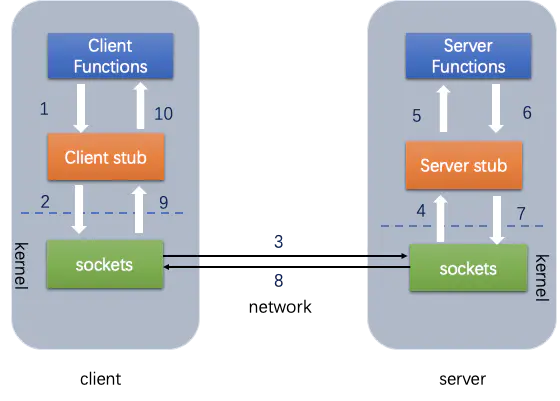
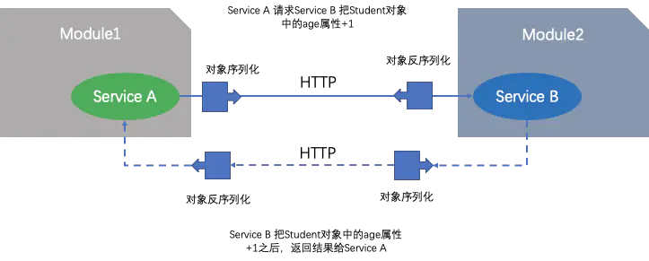

go语言RPC
概念
RPC是远程过程调用的简称，是分布式系统中不同节点间流行的通信方式。在互联网时代，RPC已经和IPC一样成为一个不可或缺的基础构件。

- RPC传输协议
- 消息序列化与反序列化
下面是一个基于HTTP的 JSON的 RPC:

Go语言RPC
Go语言的标准库也提供了一个简单的RPC实现, 包的路径为net/rpc，也就是放在了net包目录下面。因此我们可以猜测该RPC包是建立在net包基础之上的
由上图可知一个rpc服务由2个部分组成:
- server
- client
基础的RPC服务
RPC Server
1 | package main |
RPC Client
1 | package main |
rpc服务最多的优点就是 我们可以像使用本地函数一样使用 远程服务上的函数, 因此有几个关键点:
- 远程连接: 类似于我们的pkg
- 函数名称: 要表用的函数名称
- 函数参数: 这个需要符合RPC服务的调用签名, 及第一个参数是请求，第二个参数是响应
- 函数返回: rpc函数的返回是 连接异常信息, 真正的业务Response不能作为返回值
基于接口的RPC
interface
1 | package service |
server
1 | package main |
client
1 | package main |
gob编码
标准库的RPC默认采用Go语言特有的gob编码, 标准库gob是golang提供的“私有”的编解码方式，它的效率会比json，xml等更高，特别适合在Go语言程序间传递数据
gob的使用很简单, 和之前使用base64编码理念一样, 有 Encoder和Decoder
1 | func GobEncode(val interface{}) ([]byte, error) { |
写个测试用例测测
1 | func TestGobEncode(t *testing.T) { |
Json ON TCP
gob是golang提供的“私有”的编解码方式，因此从其它语言调用Go语言实现的RPC服务将比较困难
因此我们可以选用所有语言都支持的比较好的一些编码:
- MessagePack: 高效的二进制序列化格式。它允许你在多种语言(如JSON)之间交换数据。但它更快更小
- JSON: 文本编码
- XML：文本编码
- Protobuf 二进制编码
Go语言的RPC框架有两个比较有特色的设计：
- RPC数据打包时可以通过插件实现自定义的编码和解码；
- RPC建立在抽象的io.ReadWriteCloser接口之上的，我们可以将RPC架设在不同的通讯协议之上。
这里我们将尝试通过官方自带的net/rpc/jsonrpc扩展实现一个跨语言的RPC。
server
1 | package main |
client
1 | package main |
使用nc模拟访问
1 | [root@control ~]# echo -e '{"method":"HelloService.Hello","params":["zhangsan"],"id":1}' | nc 192.168.10.1 1234 |
Json ON HTTP
Go语言内在的RPC框架已经支持在Http协议上提供RPC服务, 为了支持跨语言，编码我们依然使用Json
新的RPC服务其实是一个类似REST规范的接口，接收请求并采用相应处理流程
首先我们依然要解决JSON编解码的问题, 我们需要将HTTP接口的Handler参数传递给jsonrpc, 因此需要满足jsonrpc接口, 因此我们需要提前构建也给conn io.ReadWriteCloser, writer现成的 reader就是request的body, 直接内嵌就可以
1 | func NewRPCReadWriteCloserFromHTTP(w http.ResponseWriter, r *http.Request) *RPCReadWriteCloser { |
server
1 | package main |
验证
1 | [root@control ~]# curl -X POST -d '{"method":"HelloService.Hello","params":["hello"],"id":1}' 192.168.10.1:1234/jsonrpc |